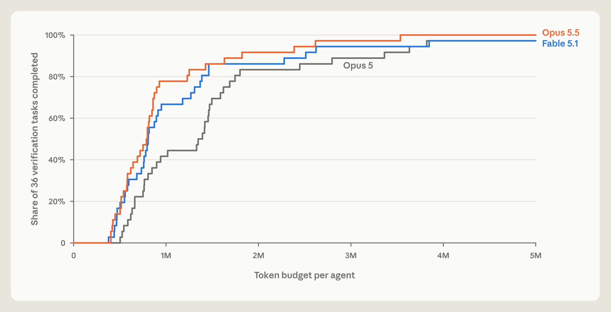
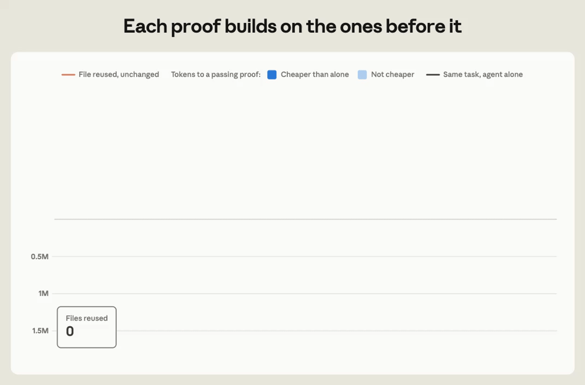
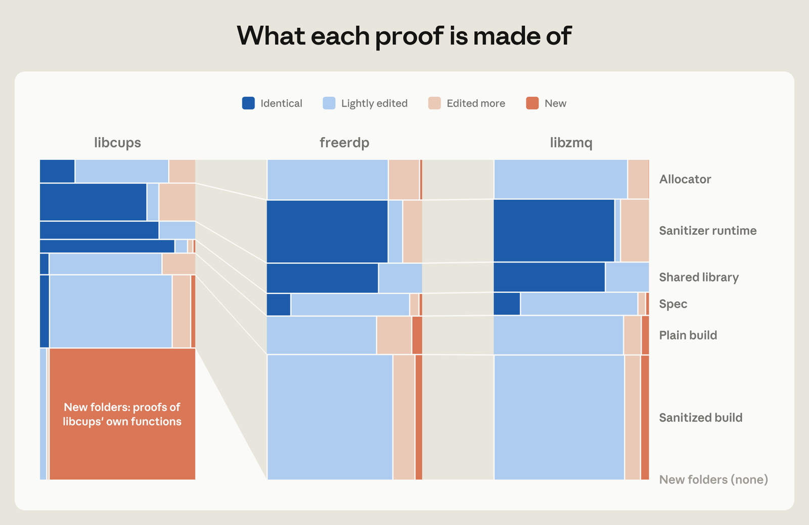

Most software is riddled with bugs, which AI can now easily find and exploit. The standard defenses against cyberattacks are no longer sufficient: we need ways to prove that code is free of bugs. Formal software verification could provide this guarantee, but it has historically required years of expert effort, making it impractical for most real-world projects. In a collaboration with Theorem, however, we show this is no longer the case: LLMs can now produce formal proofs at large scale, enabling new software development workflows that include proven security guarantees. Using Claude, we proved security properties at the assembly code level (RISC-V) in over 100 real-world open-source software libraries. To our knowledge, this represents the first large-scale effort to use AI to apply formal verification to production software at the assembly code level. While writing the proofs, Claude also discovered bugs that had eluded detection for years, despite trillions of test runs. As model capabilities continue to improve, we expect formal verification to become an essential part of secure software development.
Introduction
Even mature, heavily tested software contains bugs, and LLMs are increasingly adept at finding them. The Linux kernel—one of the most well-tested pieces of software today, deployed on billions of devices worldwide—recently had over 1,000 vulnerabilities disclosed. With frontier models becoming more capable of chaining seemingly benign bugs into critical exploits, we need techniques that can detect and fix these bugs before they can be exploited in the wild.
Ideally, such techniques could find and patch all bugs, and then provide some proof that there are no more to be found. Formal verification is one way to do this. In formal verification, developers translate their code into a mathematical model, then try to prove that it always follows some defined set of security rules. If they fail to prove this, that means there could be a bug in the code that would violate a rule, and the nature of the failure implies what the bug might be. Repeating this process (after eliminating the cause of failure each time) will ultimately yield proof that the code is devoid of any bug that would violate those rules.
However, formal verification isn’t easy. Proofs can be many times larger than the original code, and writing them requires significant effort and a niche, highly specialized skill set. For instance, it took two person-years to implement the seL4 operating system kernel, but 20 person-years to formally verify it. Accordingly, formal verification has been practical only in truly mission-critical applications, such as Airbus’s avionics code.
But LLMs are making it far easier. Frontier models can now produce correctness proofs for real-world software fully autonomously. To demonstrate this, we asked Claude to prove useful security properties across 123 open-source libraries, including showing that some of their executable artifacts can never crash under certain conditions. Specifically, Claude proved that these programs will always exit normally without triggering memory-safety errors or failing assertions, for every input less than 64 MB and every modeled Linux operating system (OS) response and memory layout, under certain assumptions (namely that the program runs as a single-threaded static binary with a fixed memory budget on a RISC-V1 CPU using Linux OS). This is still far away from fixing all possible bugs, but it does get us much closer than before and provides a roadmap toward that end.
We’re publishing a subset of these proofs so that anyone can verify and reuse them, along with the RISC-V and OS semantics. Theorem, our collaborator on this project, is also offering to run the same pipeline for other open-source projects, and is publishing a Claude skill to help developers get started with verifying their own code.
Formal verification is a broad field with many methodologies. Below, we also describe our initial explorations using other formal verification methods to accelerate other security or software development tasks, such as assessing the security of the zlib compression algorithm, proving behavioral equivalence of a Python interpreter written in Rust, and rooting out long-standing bugs in critical software.
The road ahead for formal verification is promising. The cost of writing proofs is falling as models become more intelligent. Moreover, as more code is formalized and methods of achieving security guarantees become more standardized, the ability to reuse or modify proofs across codebases will amortize the cost. We encourage all developers to explore formal verification with LLMs—especially those who previously tried it with less capable models and found it didn’t work.
In the rest of this post, we cover our formal verification experiments in more detail.
Turning tests into proofs
To prove that a piece of software is correct, we must first state what “correct” even means. Correctness is defined by the specification (spec). In some programs, there is a clear way to formally specify the program’s intended behavior. For example, a PNG decoder takes a sequence of bytes and (following RFC 2083) decodes these bytes into the corresponding image. But for most programs, things aren’t so straightforward. What would it mean for a text editor or a web browser to be “correct”? The difficulty of obtaining a comprehensive and unambiguous spec is a significant obstacle to verifying software at a larger scale.
To address this for the code in the open-source libraries that we sought to prove, we take the approach of automatically converting their preexisting compilable test suites into a spec by encoding the rule “this test suite always passes,” using a general model of what it means to execute any RISC-V-compiled binary on Linux. Historically, proving such specs was intractable, given the inherent complexity of writing a proof that can encompass and make an argument over all possible behaviors and interactions of tens of thousands of assembly instructions over any input (and the fact that proofs tend to be extremely large as a result). This is where today’s LLMs come in: churning through millions of lines of code in pursuit of a well-defined goal is a task that LLMs are extremely well suited for.
For this project, we started with fuzz tests. In these tests, developers write an entry point2 into their code that takes inputs, such that any input that causes a crash is a bug the authors care about. Then the fuzzer, a testing engine, generates enormous numbers of semirandom and mutated inputs at the entry point to try to find a bug (visualized in Figure 1). The longer a fuzzer runs, the more bugs it can find. But this is inherently a brute-force process, with no guarantee of exercising every possible code path, regardless of how many inputs you try.
Fuzzing works by running huge numbers of generated inputs through one entry point to find the inputs that cause a crash. There are infinite inputs, so the search can never be complete.
To find all the bugs that would’ve been surfaced by a fuzz test, we turned the fuzz test into a spec defined over the compiled RISC-V instructions. The spec says that the fuzz test won’t crash for any input less than 64 MB.3 If Claude can prove this spec, the fuzz test on RISC-V becomes superfluous: fuzzing that entry point will never find any bugs.
We did this for hundreds of projects in Google’s OSS-Fuzz initiative, which provides continuous fuzz testing for qualifying open-source projects. OSS-Fuzz contains thousands of developer-authored entry points that look for broken code properties by crashing (for example, on a failed assertion). OSS-Fuzz automatically instruments C and C++ programs with AddressSanitizer4 (ASan), causing them to crash whenever memory is accessed improperly (which is a leading cause of software vulnerabilities). Broad-spectrum specifications like memory safety apply to almost all software.
The open-source library and its existing fuzz test are compiled to a RISC-V executable. This executable, along with Theorem’s RISC-V and OS formal semantics and the desired no-crash property, mechanically yield a specification the proof must satisfy. Claude writes the proof; the Rocq kernel checks it against the specification. Green marks what’s proven, conditional on the trusted components being correct.
Over the span of a few weeks, Claude successfully patched the bugs it found and then proved that there are no crashes on any input (up to 64 MB) for 239 entry points across 123 different OSS-Fuzz libraries. These proofs operate on the compiled RISC-V instructions (i.e., executable binaries), and they comprise about 180 million lines of Rocq, with a typical proof running to about 600,000 lines to provide security guarantees on binaries with a median length of 18,000 RISC-V instructions. These proofs are built by translating the RISC-V assembly code to a mathematical model using Theorem’s RISC-V instruction and Linux process semantics. This means these proofs currently assume that the program runs as a single-threaded static binary with a fixed memory budget on a RISC-V CPU using Linux OS. Expanding the scope of these proofs is well within reach, as it would involve standardizing semantics for more assembly architectures and other operating system processes. See an expert’s take on the proofs Claude wrote.
A formal no-crash proof over all inputs rules out all crashes along any path reachable from the entry point. While iterating on its proof, Claude can also find and fix any remaining reachable crash-producing bug.
While this is an enormous volume of proof code, virtually none of it needs to be manually reviewed. The Rocq proof checker ensures that the spec is correctly satisfied by the proof. As a result, the only artifacts that a developer needs to trust are:
- The formal models of RISC-V and of Linux processes;
- The exact theorem statements that were proved;
- The Rocq proof checker itself.5
This doesn’t mean these libraries contain no bugs. Instead, it means that any remaining bugs either are to be found within the artifacts listed above or are outside the scope of Claude’s proof. Hardening those still-possibly-buggy trusted components (Rocq, RISC-V, and Linux semantics) is not insignificant, but it’s a far more tractable task than debugging every line of code the scaled-out proofs cover—especially as this approach can secure an arbitrary number of projects without increasing the size of the trusted components.
We welcome independent verification of our proofs and encourage refinement of our approach. To that end, we are publishing the trusted components (above) made for this project that are not already public; Claude’s complete Rocq proofs for fuzz tests that did not require patching; and specifications for other fuzz tests we were not able to prove.
Finding and fixing bugs
Above, we showed that you can turn many open-source libraries’ developer-written tests (fuzz tests) into specs that Claude can prove will always pass, sometimes after patching the remaining bugs it found. For this reason, the process of attempting to prove these specs discovered hundreds of bugs.
Lots of bugs showed up during Claude’s attempts to prove hundreds of entry points. To ensure that Claude didn’t have to stop for a human every time this happened, we let Claude fix the bugs it found: it patched the code, which caused the spec to be regenerated with that patched code, and then Claude proceeded to prove that new spec.6
Many of the bugs we found are ones that a fuzzer would be unlikely to ever find. Fuzzers mutate small inputs, typically capped at 1 MB, and typically rely on code coverage to guide them toward bugs. While proving an entry point in one library, Claude found a counter underflow in its copy of a decompressor that led to an out-of-bounds write, but only on inputs of around 20 MB that had one rare, specific layout. Other bugs include an out-of-bounds read in an image decoder that needed a 64 MB input and over 2 GB of memory, an out-of-bounds read in another library that needed a particular sequence of calls across two handles to the same file, and a rediscovery of CVE-2026-56132 in libexpat, which needed deeply nested input. Claude also found logic bugs that never crash at all. While proving that one library was memory-safe, for example, it noticed that a feature for restricting which files an application can load isn’t always enforced.
The ultimate goal of this project was to achieve a proof that the RISC-V-compiled fuzz tests had no remaining crashes to find. However, bugs like the above show that the process has another benefit, regardless of whether that goal is achieved: even just attempting this process yields real bugs that need to be fixed.
Proving more than memory safety
Proving that a fuzz test has no more crashes to find is more significant than it sounds. It’s common for fuzz tests in real-world code to test for violations of meaningful high-level properties, such as encode-decode roundtripping, idempotence, algebraic laws, differential testing, self-consistency, or equivalence to reference implementations. For example, a fuzz test for the LZO compression algorithm asserts that if you compress an input, then decompress it, the result is the same as the original. If the property does not hold, the program crashes—so proving the test never crashes is equivalent to proving the property itself.
This can also occur even when the properties are not directly specified by the developer. For example, in order for Claude to complete its OSS-Fuzz proof for cpp-httplib, it was necessary to rule out the possibility of a stack overflow due to too much recursion in the std::set destructor. This recursion depth is bounded by the maximum depth of a tree, so Claude had to prove (on machine code!) that libc++’s red-black tree rebalancing algorithm is correctly optimized to keep the tree’s depth logarithmically bounded.
Other formal verification case studies
Formal verification is an expansive domain. The fuzz-test-to-proof example above is one instance of LLMs making formal verification more widely usable by directly applying proofs to machine code.
We’ve also seen success using LLMs with formal verification in other ways. For example, we asked Claude to write a formal spec of RFC 1950, the technical document that defines the zlib compression file format. Then, we had Claude prove that the zlib implementation in the Linux kernel correctly implements that spec. As with the examples above, Claude proved this property at the binary level, except instead of RISC-V, Claude directly proved the x86-compiled binary using Claude-generated (and heavily tested) formal semantics of the x86 ISA.7 We then repeated this process for half a dozen other widely used libraries. Along the way, we found some minor (unexploitable) bugs in corner cases, which are in the process of being filed upstream. We draw two conclusions from this exercise: (1) these extremely well-tested codebases are already almost fully correct, and (2) it is possible to prove end-to-end correctness properties about real existing codebases.
In another experiment, we asked Claude to develop an interpreter for a large subset of Python in Rust, and to prove (using Verus, a verification tool for Rust) that it adheres to the CPython semantics outlined in an academic paper. We then measured the adherence to CPython’s behavior empirically, running over 1.7 million randomly generated Python programs, finding identical behavior with CPython in 99.95% of tests, with remaining test differences as unsurprising known corner cases.
We also found issues in several widely used and critical applications via formal verification attempts of simple security properties. In one of them, we discovered a previously unknown logic bug that had been latent for more than a decade. During an effort to verify a widely used PDF reader, we found as many security bugs in one week as are typically reported in a year.
See the Appendix for more details on some of these efforts.
This is just the beginning
One of the key limitations of LLM-assisted formal verification is that the proofs can take hundreds of millions of tokens to produce. Cost-efficiency is critical if our goal is to make these methods available to the entire software ecosystem. Fortunately, there are compelling reasons to expect efficiency to improve.
Newer models need fewer tokens
We built 36 small verification tasks from real OSS-Fuzz code. Opus 5.5 proves half of them with about 40% fewer tokens than Opus 5. We expect this trend to continue as models are trained on long verification tasks.

Proofs can be reused
When agents work separately, they often end up duplicating a lot of effort. Proofs, like software, are recursively built from smaller proofs—and the smaller the proofs are, the more reusable they tend to be. To measure the impact of this, we let agents copy each other’s proofs as they worked on proving their own targets. When given access to this shared workspace, agents needed 17% fewer tokens than when they worked alone, and some agents even succeeded after previously failing in a solo attempt.

We observed the same phenomenon occurring at scale during our OSS-Fuzz proof effort. Most of a proof concerns code that every program contains (particularly initialization of the C runtime and AddressSanitizer), so very different programs can end up with significantly overlapping proofs. Agent teams took advantage of this by copying another team’s finished proof and then adapting it to their own program (Figure 6).

This reusability of proofs is how Mathlib, a shared library of formal mathematics in Lean, grew to nearly 300,000 theorems submitted by over 700 contributors: each new proof builds on the existing body of work. We accumulated a similar body of proofs in the course of our OSS-Fuzz effort, some of which we’re including in our release (we are not releasing proofs that may reveal an unpatched bug in the open-source software).
As we graduate from these initial experiments, we need a strategy for verifying the enormous body of existing software, starting with the most critical dependencies. As we’ve shown, this can be achieved at scale by using generic specs and working at the binary level, sidestepping the need to rewrite entire codebases in another language.
This approach also facilitates the reuse of proofs at package-level granularity, which means that each dependency only needs to be verified once. Dependencies follow a power law: proving even a small set of shared libraries makes a huge swath of software feasible to prove. For more details, see Theorem’s roadmap for verifying the entirety of the Nix ecosystem, which includes critical infrastructure like glibc, OpenSSL, and cURL.
Limitations
In practice, formal verification can sometimes prove less about the security of the code than we would like.
“Formally verified” does not mean “bug-free.” Claude can write a proof showing that a compiled program’s behavior satisfies the requirements of a formal spec (which is verified by an external proof checker). However, a proof checker can’t tell you whether your spec matches reality. To match reality, the spec must correctly encompass and model everything about the real-world machine that the verified program runs on, including the CPU and operating system. When bugs show up in verified code, it’s because the spec, or the assumed semantics of the machine, differs from reality. Fortunately, this also means we know where to look for remaining bugs, and how to design a system where those still-possibly-buggy gaps are minimized. Below are the ways this applies to our proofs, and ideas for future work that would close those gaps.
The real machine does something the model doesn’t describe. Our proofs are about single-threaded, static RISC-V binaries linked against musl libc. However, most people run these libraries on x86 or ARM and dynamically link them against glibc. To close this gap, we’d need system models that more closely resemble deployed systems. For example, a step toward this would be generating accurate semantics for x86.
The claim may not cover everything we care about. We proved that a crash never triggers for any input under 64 MB on many fuzzing entry points in Google OSS-Fuzz, including ASan crashes. However, ASan doesn’t detect all memory safety bugs, and we didn’t verify all the entry points for each library. Even if we had, the whole library wouldn’t be covered by verifying all entry points (especially if there is dead code). Additionally, real programs might misuse the library, leading to memory corruption in the caller. To close that gap, we’d need to specify what callers must do for each public function, and callers would have to strictly adhere to it.
We expect that as we learn more about leveraging LLMs for formal methods, and as models continue to improve, these limitations will become tractable, and we’ll be able to verify a much larger percentage of the code we rely upon.
Conclusion
The trajectory is clear: formal verification, which was historically practical only for bespoke expert-crafted guarantees in the most safety-critical code, will soon be as practical as fuzzing is today for almost all production software. Just like static types, testing frameworks, and other correctness tooling, verification will mature from “bolted-on” to “built-in,” driven not only by LLMs but also by innovations in language design and development workflows.
In today’s world—where LLMs automatically scan for and find increasingly more code vulnerabilities—we must use processes that can guarantee code security properties. LLM-scaled formal verification is a promising approach toward securing these guarantees at a scope and scale that were previously unattainable. We encourage others to experiment so we can collectively build a world in which robust software has proliferated very widely and software bugs are a well-understood and quickly addressable rarity.